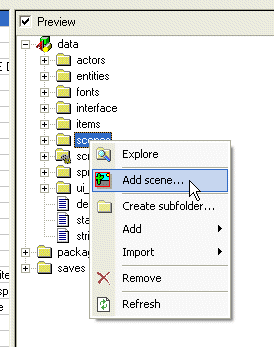
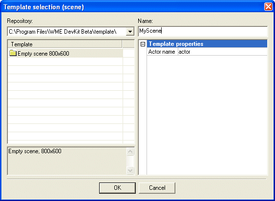
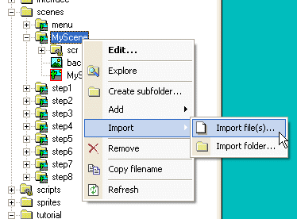
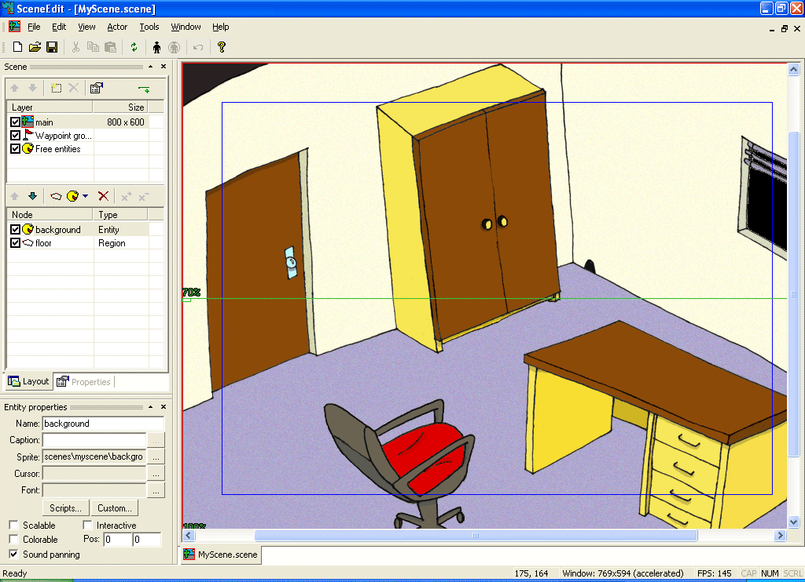
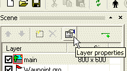
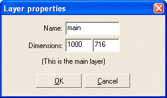
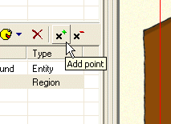
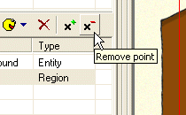
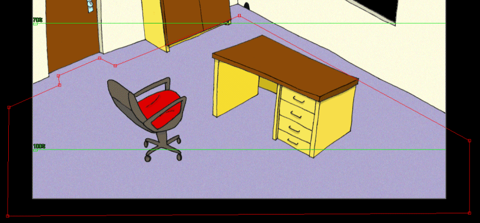

Spus�te program ProjectMan a otevøete projekt "scene_tut.wpr" (najdete ho v adresáøi, do kterého jste nainstalovali WME Development Kit, v podadresáøi "scene_tut"). Tento projekt u� obsahuje pøipravené hotové scény pro ka�dı z krokù této vıukové kapitoly. Mù�ete si tyto scény prohlédnout (jsou v adresáøi "scenes") pomocí nástroje SceneEdit. A pokud spustíte hru (pøíkazem "Run game" - spustit hru), mù�ete si prohlédnout vıslednı efekt.
Naši vıuku zaèneme vytvoøením úplnì nové scény. Klepnìte pravım tlaèítkem myši na slo�ce "scenes" a z nabídky vyberte pøíkaz "Add scene..." (pøidat scénu).

Objeví se okno "Template selection" (vıvìr šablony). Zvolte polo�ku "Empty scene 800x600" (prázdná scéna 800x600) a zmìòte jméno (Name) na MyScene.
(Poznámka: v tomto pøípadì musíte scénu pojmenovat MyScene, proto�e na to pøipravenı projekt spoléhá, jinak samozøejmì mù�ete scénu pojmenovat jak chcete)

Kliknìte na tlaèítko OK a ProjectMan vytvoøí novou scénu.
Nyní potøebujeme naimportovat pro naši scénu obrázek pozadí. Je doporuèeno ukládat všechnu grafiku pro jednu scénu do jejího adresáøe. Grafika pro tuto vıukovou scénu byla pøipravena pøedem. Naleznete ji v adresáøi "tutorial\gfx". Kliknìte pravım tlaèítkem myši na slo�ce "MyScene" a vyberte v nabídce pøíkaz "Iport->Import file..." (Import->Import souboru). V oknì pro vıbìr souboru pøejdìte do adresáøe "scene_tut\data\tutorial\gfx" a vyberte soubor "background.bmp". ProjectMan nyní pøekopíruje obrázek do slo�ky s vaší novou scénou. (Poznámka: pro nakopírování souboru mù�ete zrovna tak pou�ít Prùzkumníka, Windows Commander nebo jiného správce souborù).

Vıbornì, nyní máme novou scénu se správnım obrázkem pozadí.
Vıslednou scénu si mù�ete vyzkoušet. Na panelu nástrojù stisknìte tlaèítko "Run game" (spustit hru). Je to tlaèítko s èervenım vykøièníkem. Tím se spustí herní engine a nahraje náš vıukovı projekt. Svou scénu zobrazíte kliknutím na polo�ku "My Scene". Vısledek zatím není pøíliš ohromující, �e? Postava mù�e vkroèit kamkoliv, nemìní se její velikost podle vzdálenosti od kamery a scéna neskroluje.
Ukonèete herní engine (stisknìte klávesu Escape pro návrat na obrazovku s vıbìrem scény a potom znovu Escape pro ukonèení).
V ProjectManu klepnìte pravım tlaèítkem myši na souboru "MyScene.scene" a z nabídky vyberte pøíkaz "Edit..." (také mù�ete spustit editor, pokud poklepáte (double-click) na názvu souboru). ProjectMan otevøe naši scénu v programu SceneEdit.

Teï si mù�eme zbì�nì prohlédnout nástroj SceneEdit: SceneEdit je urèen k editaci scén pro WME (soubory s pøíponou .scene). Na pravé stranì je náhled scény, kde mù�ete manipulovat s jejími jednotlivımi souèástmi. Na levé stranì je panel nástrojù. Ten zobrazuje seznam vrstev (vrstvy si popíšeme pozdìji), seznam prvkù scény a vlastnosti vybraného prvku.
Zkuste kliknout na rùzné polo�ky v seznamu prvkù (momentálnì jsou tam dva prvky: "background" (pozadí) a "floor" (podlaha). Všimnìte si, �e náhled scény se mìní podle vašeho vıbìru a zvolené prvky jsou zvıraznìny (buïto pozadí, nebo obdélníková oblast na podlaze). Také okno vlastností ("Properties") se mìní podle toho, kterı prvek vyberete.
Dobøe, kdy� jsme testovali naši scénu, tak se neposouvala podle pozice postavy, �e? Teï to napravíme. Náš obrázek pozadí má velikost 1000x716 pixelù, ale rozmìry scény jsou pøednastaveny na 800x600. Zmìníme rozmìry tak, aby odpovídaly našemu obrázku pozadí. Vyberte polo�ku "main" v nahoøe seznamu vrstev a potom kliknìte na tlaèítko "Layer properties" (vlastnosti vrstvy). Objeví se dialogové okno "Layer properties" (vlastnosti vrstvy). Zmìòte rozmìry na 1000x716 a stisknìte OK.


Tak, jeliko� naše hra bì�í v rozlišení 800x600 a scéna má rozmìry 1000x716, herní engine u� sám pozná, �e musí scénu patøiènì posouvat.
Poslední vìc, kterou udìláme v tomto kroku je, �e nauèíme naši postavu, kam mù�e vstoupit a kam ne. V seznamu prvkù vyberte polo�ku "floor" (podlaha). Tento region ohranièuje oblast ve scénì, ve které se mohou postavy pohybovat. Zmìníme tvar regionu "floor" tak, aby zhruba kopíroval pùdorys naší místnosti. Díky tomu nebude moct postava napøíklad vcházet do zdí.
Regiony ve WME mohou mít prakticky libovolnı tvar. Mù�ete pøidávat i ubírat vrcholy a pøesunovat myší vrcholy na jiné místo. Tak dosáhnete po�adovaného tvaru.
Novı vrchol pøidáte regionu pomocí tlaèítka "Add point" (pøidat bod). Stisknìte tlaèítko a potom kliknìte myší ve scénì na místì, kde chcete novı vrchol vytvoøit. SceneEdit pøidá vrchol do regionu (pokusí se odhadnout, mezi které dva stávající vrcholy má ten novı vlo�it). Všimnìte si, �e pøi vkládání nového vrcholu se zmìní kurzor myši. Pokud chcete vkládání vrcholu stornovat, stisknìte pravé tlaèítko myši.

Podobnì mù�ete vrcholy odstraòovat pomocí tlaèítka "Remove point" (odebrat bod). Stisknìte tlaèítko a potom kliknìte myší na vrchol, kterı chcete odstranit.
Poznámka: Ka�dı region musí mít minimálnì tøi vrcholy.

Vrcholy regionu mù�ete pøetahovat myší na jiné místo. Najeïte kurzorem myši nad vrchol (kurzor zmìní tvar) a potom stisknìte a dr�te levé tlaèítko myši a pøesuòte vrchol na po�adovanou pozici. Potom tlaèítko myši pus�te.
|
|
Pokud neúmyslnì chytíte myší špatnı objekt, mù�ete pøetahování stornovat stisknutím pravého tlaèítka myši. Objekt se pak vrátí na své pùvodní místo. Stejnì tak samozøejmì mù�ete pou�ít také pøíkaz "Undo" (zpìt). |
Dobøe, teï si to zkusme. Pokuste se zmìnit tvar regionu "floor" tak, aby zhruba odpovídal následujícímu obrázku.

Ulo�te svou scénu a ukonèete program SceneEdit. Zkuste znovu spustit hru. Scéna by se teï mìla správnì posunovat podle pozice postavy a postava by nikdy nemìla opustit podlahu.
Pokraèujme na Krok 2: Entity ve scénì.